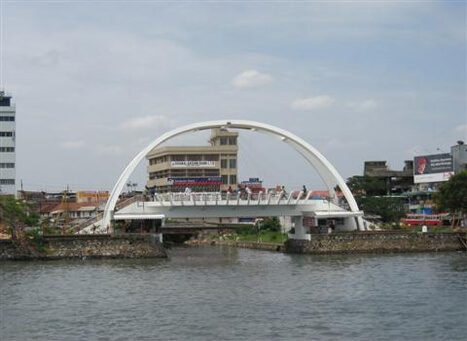
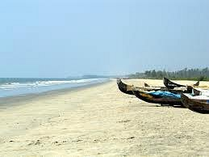

~ Places to Visit in Kochi ~
Popular things to do

Parks

Churches & Cathedrals

Architectural Buildings
Top Attractions Kochi
LuLu Mall
The mall has one of the largest hypermarkets in India, a 2,500-seater
multi-cuisine food court, 11 fine dining restaurants and 6 cafes. The
mall features a gold class 9-screen multiplex, and a leisure zone including
South India's largest ice skating rink, a trampoline park, amusement rides,
and a 12-lane bowling alley.

Chottanikkara Temple
Chottanikkara Temple is one among the most famous temples
of Kerala where mentally disturbed people, come in thousands
to get cured. This temple is 8 KM away from present-day
Thripoonithura (which is a suburb of Kochin or Eranakulam).
There are two main temples here.
Kerala Folklore Museum
Folklore museum is the only architectural museum in
Kerala and the treasure trove of stone, wood and
bronze sculptures, ancient terracotta, stone Age
objects, jewellery, paintings, oil lamps, musical
instruments, tribal and folk art, wood works, utensils,
masks and traditional art forms etc.
Wonderla Amusement Park
Wonderla Kochi is the first park in India to get ISO 14001
certificate for eco-friendliness and OHSAS 18001 certificate
for safety. The park is spread over 30 acres of landscaped
space with more than 60 amusement rides.
Jew Town
Jew Town is the narrow street between Mattancherry Palace and the
Pardesi Synagogue. It is famous for the antique shops all along its
sides. The colonial buildings lining the street add to its old-world
charm. The Jews from Kodungallore were given shelter by the King of
Kochi, in 1524.
Edappally Church Complex
Edappally, about 10 km away from the city, is famous for
the St. George Forane Church, one of the oldest Roman
Catholic Churches in the State. The church, popularly known
as Edappally Pally, was a small structure at the time of
its construction in 594 AD.

Marine Drive
Marine Drive is a picturesque promenade in Kochi, India.
It is built facing the backwaters, and is a popular hangout
for the local populace. Despite its name, no vehicles are
allowed on the walkway. Marine Drive is also an economically
thriving part of the city of Kochi.
Paradesi Synagogue
The Paradesi Synagogue has the Scrolls of the Law, several
gold crowns received as gifts, many Belgian glass chandeliers,
\and a brass-railed pulpit. It houses the 10th-century copper
plates of privileges given to Joseph Rabban, the earliest
known Cochin Jew.
Chinese Fishing Nets
The nets may have been introduced by the Chinese explorer Zheng He.
The Chinese fishing nets have become a very popular tourist
attraction. Their size and elegant construction are photogenic
and the slow rhythm of their operation is quite hypnotic.

Vypeen Island
There is a lighthouse and some pristine beaches lining
the seaside, Cherai Beach and Kuzhupilly Beach being the
most popular. There are many seaside resorts and restaurants
as well on the beach front. It is worth taking a ferry
trip to Vypin Island if you are visiting Kochi or Ernakulam
for sight-seeing.
Fort Kochi Beach
Fort Kochi takes its name from the Fort Manuel of Cochin,
the first European fort on Indian soil, controlled by the
Portuguese East Indies. This is part of a handful of water-bound
islands and islets toward the south-west of the mainland Kochi,
1
and collectively known as Old Cochin or West Cochin.
Subhash Park
Subhash Park is a favourite among kids as well as adults
as it is virtually a green oasis in the concrete jungle
of Kochi city. As the park is located beside the backwaters,
visitors can also enjoy the sight of passing ships from
around the world entering and leaving Cochin Port.